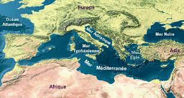
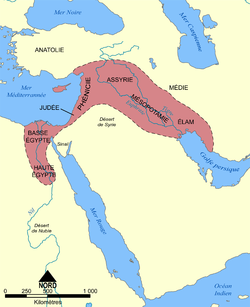
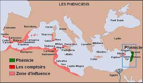

Histoire du bassin méditerranéen

Le bassin méditerranéen est, avec les bassins de l'Indus, du Gange, du fleuve Jaune et du Yangtsé, l'une
des régions plus importantes pour l'histoire du monde. Elle constitue le point de départ de plusieurs
grandes civilisations, dont s'est nourrie la civilisation occidentale. Dès que l'homme a su construire
des barques, des navires, la Méditerranée s'est transformée en lien entre continents, la navigation
permettant de rejoindre deux points plus aisément que la marche, et de transporter des charges bien plus
lourdes. Théra est l'un des plus anciens vestiges d'une thalassocratie : la Crète, mais bien d'autres se
sont succédé : Phénicie, Carthage, Grèce, Rome, Byzance, les peuples Arabes, les Berbères, les Normands
de Sicile, les Génois, les Vénitiens, les Catalans, les Libyens, les Egyptiens, les Ibères, les
Mésopotamiens, les Ottomans... l'ont été et en ont fait le tour. Le monde grec avait un « nombril »,
Delphes, et de là rayonnait vers les extrémités de la Méditerranée qui, pour ses peuples, étaient les «
extrémités du monde » : les Colonnes d'Hercule ouvrant sur la « mer Océane », le détroit des Dardanelles
ouvrant, par la Propontide et le Bosphore, sur le Pont Euxin, et le Nil ouvrant sur les mystérieuses
terres chaudes de l'« Aethiopie ». Toutefois la civilisation méditerranéenne n'a jamais été repliée sur
elle-même : à l'Ouest, les Carthaginois connaissaient Tartesse et les « îles à étain » c'est-à-dire
l'archipel britannique ; à l'Est, la « route de la soie » aboutissait dans les ports du bassin levantin
tandis que partant d'Égypte, la « route des épices et des pierres précieuses » menait jusqu'aux Indes et
la « route de l'encens et de l'ivoire » jusqu'à la côte orientale de l'Afrique. Après avoir été un « lac
romain » (Mare Internum en latin), la Méditerranée, divisée par les invasions et les rivalités
religieuses, devint un enjeu central dans l'affrontement géostratégique des pouvoirs qui la bordèrent,
jusqu'à ce que son intérêt soit supplanté par les océans, révélés par les Grandes découvertes.
Antiquité : foisonnement de civilisations

Parmi les premières civilisations connues, deux sont nées dans cette région. La vallée du Nil fut unifiée
sous le règne des pharaons au cours du quatrième millénaire avant notre ère. Peu après, une autre
civilisation est apparue en Mésopotamie et s'est rapidement étendue dans le croissant fertile jusqu'à la
côte Est de la Méditerranée à travers le Levant. Ces régions avaient en commun le climat et la
géographie. Vers le troisième millénaire avant notre ère, l'agriculture (dont la viticulture) et les
villes essaimaient déjà en Anatolie et dans les Balkans, mais il fallut beaucoup plus de temps pour
étendre les savoir-faire et les cultures à d'autres régions du bassin méditerranéen.
Vers la même époque, de grands empires se sont installés en Asie Mineure, tels les Hittites. Leur
expansion fut cependant retardée jusqu'à ce que des navires assez robustes pour traverser les mers
soient construits. Chypre et les autres îles se développèrent, et la civilisation minoenne prospéra dans
l'île de Crète. Tandis que les civilisations des fleuves ont toujours été les plus peuplées, ce sont les
sociétés commerçantes des régions côtières qui devinrent les plus prospères et les dominèrent.
La période du Néolithique est marquée par la sédentarisation des peuplades nomades dans le bassin
méditerranéen et par le début des activités d’élevage et d’agriculture. La pratique de ces activités
crée un environnement favorable au développement du commerce entre les différentes civilisations. Les
premiers échanges commerciaux par voie maritime se produisent entre les peuplades qui bordent les rives
de la mer Égée. Ces échanges se concentrent majoritairement sur le commerce de deux produits : le
spondyle et l’obsidienne. Du fait de la petite taille des embarcations de l’époque, d’autres produits
comme les céréales, la poterie et les animaux d’élevage font également l’objet d’échanges mais dans une
moindre dimension. Avec le développement des populations cycladiques, les activités commerciales en mer
Égée s’amplifient. Les progrès que cette civilisation réalise dans le domaine maritime permet un
commerce à plus grande échelle, augmente les échanges entre l’Anatolie et les Balkans et étend la
pratique du commerce à l’ensemble du bassin de la mer Égée. Après la disparition de la civilisation
cycladique, ce sont les Crétois qui développent leurs activités de commerce. Cette civilisation innove
par la pratique de la navigation au long cours et inonde l’ensemble du bassin Est de la Méditerranée par
ses poteries. Cependant, après une longue période de développement et de prospérité, les différents
peuples qui vivent dans la région vont connaître une longue récession qui durera cinq siècles.
Les Empires
Grèce, Phénicie, Macédoine

Les deux plus importantes parmi ces dernières furent les cités États de la Grèce et les Phéniciens. Les
Grecs poussèrent leur expansion au nord jusqu'à la mer Noire et au sud jusqu'à la mer Rouge. Les
Phéniciens s'étendirent vers la Méditerranée occidentale, en Afrique du Nord et en Espagne. La Phénicie
était encore dominée par des puissances basées plus à l'Est en Mésopotamie ou en Perse et les Phéniciens
fournirent souvent les forces navales de l'empire perse. La prospérité des Grecs est restée longtemps
liée à la mer ; au Nord, les Macédoniens, forts d'une longue tradition de guerre de cavalerie, avaient
forgé la supériorité des Grecs dans le domaine de la technique et de l'organisation. Sous le règne
d'Alexandre le Grand, cette force se tourna vers l'Est, et par une série de trois batailles décisives,
mit en déroute les armées perses et conquit leur empire. La Phénicie et l'Égypte furent annexées. Pour
la première fois dans l'histoire, tous les grands centres de la Méditerranée se trouvaient réunis sous
le même pouvoir. L'empire d'Alexandre se désintégra rapidement et le Moyen-Orient, l'Égypte et la Grèce
furent à nouveau indépendants. Les conquêtes d'Alexandre ont néanmoins répandu dans toute la région le
savoir-faire et les idées des Grecs.
Si, pendant le Néolithique, la pratique du commerce par mer s’est exclusivement concentrée sur les rives
orientales de la Méditerranée, les échanges vont s’étendre et se diversifier à l’ensemble du bassin au
cours de l’Antiquité. Les premiers à étendre leurs activités à l’ensemble des deux bassins sont les
Phéniciens. Cette civilisation apparaît à la fin de la grande période de récession. Marins de grande
valeur, les Phéniciens innovent dans le domaine des techniques de navigation et dans celui de la
construction navale. Ces avancées technologiques leur permettent d’entreprendre de grands voyages
d’exploration dans l’ensemble de la Méditerranée. Mais les Phéniciens sont également un peuple de
marchands. Ils développent leur commerce en inventant une technique jusqu’à lors inconnue ; ils fondent
des comptoirs dans l’ensemble de la Méditerranée. À partir du viie siècle av. J.-C., les Grecs
commencent leur colonisation du bassin méditerranéen. Cette phase d’expansion s’accompagnera d’un regain
des activités commerciales et maritimes en Méditerranée. Les Grecs s’inspirent du modèle phénicien et
fondent des comptoirs et des ports marchands dans leurs colonies. Les matériaux et les produits finis
circulent à travers l’ensemble de la région. Athènes devient un grand empire maritime et le centre
névralgique du commerce en Méditerranée. La mort d’Alexandre le grand et le démembrement de son empire
profitent à la ville d’Alexandrie qui devient le grand pôle de la vie économique. Les routes maritimes
délaissent la vieille Grèce, les marchandises sont désormais acheminées depuis le port d’Alexandrie.